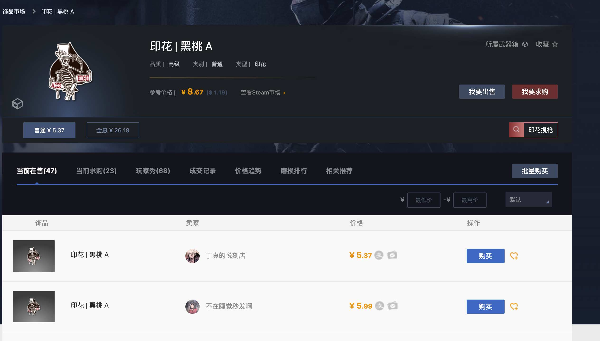
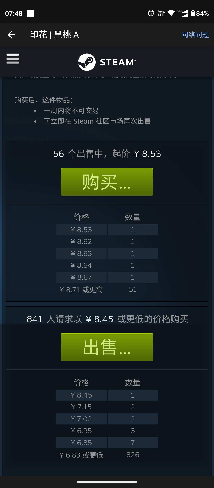

steam挂刀余额充值低至7折
- 作者:
- 淡白
- 创建时间：
- 2023-08-16 07:54:24
- steam
摘要：文章提到了一种通过buff和steam市场差价来低价充值的方法。具体步骤为在buff交易平台购买一个与steam市场价格差距较大的饰品，然后在市场上出售该饰品获取steam余额。注意，购买饰品后不能立即交易，但可以立即在市场上出售。在此过程中会扣除15%的手续费。这样可以通过差价来获得额外的余额。同时，文章也注意到，在选择饰品时应避免购买印花之类的物品，因为差价较大的饰品可能会延迟2-5天到账。文章最后提到，作者搭建了一个余额交易平台来帮助大家找到这样的饰品，并表示该交易方式适用于所有地区，但必须开通市场。
解释
通过buff和steam的市场差价来实现，第一步去buff交易平台购买一个价格与steam市场差距较大的饰品，购买后不能立即交易但是可以立即在市场出售换取steam余额。会扣除15%的手续费。 这样多出来的余额就相当于是赚的了。 还有一个情况值得注意，饰品如何和市场价格差距较大可能余额会出现待处理的情况，这样余额会延迟2-5天到账。所以购买饰品尽量选择武器皮肤别买印花之类的。
实战
例如我在这选择5.37元的这个印花
 
在steam中的求购价格为8.45 去掉15%的手续费到手就是7.34 这样我们用了5.37到steam余额是7.34 大概就是7折充值的
结
虽然我们能通过倒卖饰品来达到低价充值的目的但是往往这样的饰品不太好找，于是我最近搭建了一个余额交易平台来帮助大家找这样的饰品。 还有一件事，该交易方式支持所有地区，但是必须要开通市场！！！
交易平台：steam余额交易